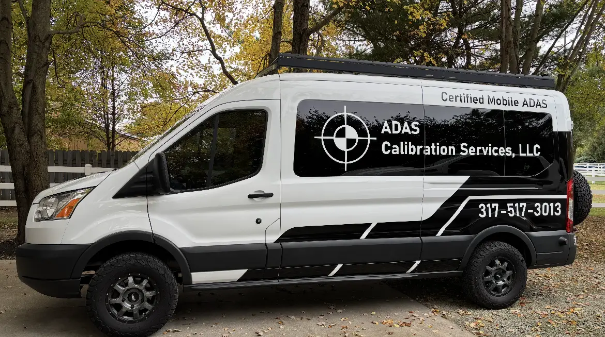
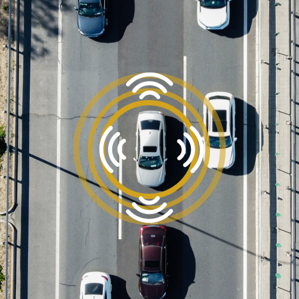

Windshield Camera Recalibration
Cameras are the primary sensor for lane keeping, speed limit recognition, and pedestrian warning. If the windshield is replaced, or the vehicle undergoes suspension modifications, the forward camera must be static-targeted inside a structured bay followed by dynamic training sequences.
- Dual-camera systems (Subaru Eyesight)
- 360-degree surround stitching
- Rearview backing guide gridlines
.jpg)
Long-Range & Blind Spot Radar Alignment
Front bumper radar determines distance and speed values for adaptive cruise control. A tiny offset in bumper brackets throws the field of view off, leading to delayed brake response times. Our laser fixtures guarantee radar alignment parameters within manufacturer margins.
- Mechanical level alignments
- Corner radar tracking resetting
- Cross-traffic safety validation
.jpg)
High-Resolution LiDAR Array Service
LiDAR sensors provide real-time 3D spatial mapping. Alignment of these laser arrays requires precision targets. We use high-precision physical patterns and target configurations designed to support level 2 and 3 autopilot platforms.
- Multi-channel point cloud validation
- Laser mirror leveling controls
- Obstacle detection margin validation
.jpg)
Post-Collision Structural Recalibration
Following a structural collision repair, ADAS sensors must be recalibrated. Simply clearing diagnostic codes does not confirm alignment. We scan the vehicle, restore the physical position to factory specifications, and print certified insurance records.
- Complete digital OBD system scans
- Active Diagnostic Trouble Code resolution
- Insurance verification certificate output
.jpg)
On-Site Mobile ADAS Service
Save transport costs. Our mobile rigs carry all target fixtures, floor boards, laser systems, and diagnostic tools to complete static calibrations inside your own workshop or dynamic runs on local roadways.
- Van carries complete factory target sets
- Leveling mats for uneven shop floors
- Complete compliance reporting on-site

The 4-Step Calibration Process
We follow a strict, standardized protocol to guarantee accuracy and safety.
Pre-Scan Diagnostics
Full OBDII scan to identify fault codes and assess sensor communication status before any work begins.
Physical Alignment
Precision laser setup and target board placement in strict accordance with the OEM service manual.
Software Flash
Using dealership-grade software to flash new camera matrices and radar angles to the vehicle's ECU.
Dynamic Road Test
A post-calibration validation drive and final post-scan to generate the official compliance certificate.

Autel MaxiSYS
Diagnostic Tablet
Equipped for Absolute Precision
Our mobile vans are outfitted with the same high-end target boards, digital radar reflectors, and diagnostic tablets used by luxury dealerships. This ensures our mobile team never compromises on quality.
- Laser Alignment Rigs: Ensure target boards are perfectly parallel to the vehicle thrust angle.
- Doppler Radar Simulators: Emulate highway movement for blind spot sensor calibration inside a stationary bay.
- J2534 Pass-Thru Devices: For seamless, secure communication directly with OEM cloud servers.